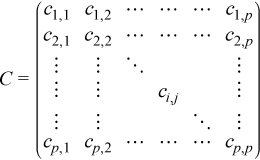

Intel® oneAPI Math Kernel Library Developer Reference - Fortran
Modifies the pointers to covariance/correlation/cross-product parameters.
status = vslssseditcovcor(task, mean, cov, cov_storage, cor, cor_storage)
status = vsldsseditcovcor(task, mean, cov, cov_storage, cor, cor_storage)
Name |
Type |
Description |
|---|---|---|
task |
Fortran: TYPE(VSL_SS_TASK) |
Descriptor of the task |
mean |
Fortran: REAL(KIND=4) DIMENSION(*) for vslssseditcovcor REAL(KIND=8) DIMENSION(*) for vsldsseditcovcor |
Pointer to the array of means |
cov |
Fortran: REAL(KIND=4) DIMENSION(*) for vslssseditcovcor REAL(KIND=8) DIMENSION(*) for vsldsseditcovcor |
Pointer to a covariance matrix |
cov_storage |
Fortran: INTEGER |
Pointer to the storage format of the covariance matrix |
cor |
Fortran: REAL(KIND=4) DIMENSION(*) for vslssseditcovcor REAL(KIND=8) DIMENSION(*) for vsldsseditcovcor |
Pointer to a correlation matrix |
cor_storage |
Fortran: INTEGER |
Pointer to the storage format of the correlation matrix |
Name |
Type |
Description |
|---|---|---|
status |
Fortran: INTEGER |
Current status of the task |
The vslSSEditCovCor routine replaces pointers to the array of means, covariance/correlation arrays, and their storage format with values passed as corresponding parameters of the routine. If you pass a value of NULL for a specific input parameter, the value of that parameter in the task descriptor is unchanged.
The storage parameters, cov_storage and cor_storage, describe the storage format used for the p-by-p symmetric variance-covariance/correlation/cross-product matrix C. The matrix C can be described as

Table "Storage formats of a variance-covariance/correlation/cross-product matrix" shows how the matrix is stored in a one-dimensional array cp for different values of the storage parameters.
Parameter |
Description |
|---|---|
VSL_SS_MATRIX_STORAGE_FULL |
The array cp contains all elements of the matrix stored sequentially, column-by-column:
The size of array cp is p*p. |
VSL_SS_MATRIX_STORAGE_L_PACKED |
The array cp contains the lower triangular part of the symmetric matrix stored sequentially, column-by-column:
The size of the array is p*(p+ 1)/2. |
VSL_SS_MATRIX_STORAGE_U_PACKED |
The array cp contains the upper triangular part of the symmetric matrix stored sequentially, column-by-column:
The size of the array is p*(p+ 1)/2. |